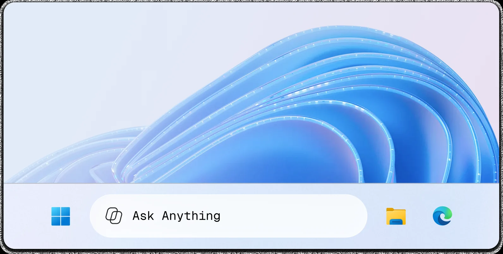

Window Search Box
A new ways of interacting with your computer
Explore the world of design with me
Currently Senior Product designer at Microsoft. I make complex products feel intuitive, useful, and a little delightful. Crafting thoughtful experiences for people and businesses.
Select work